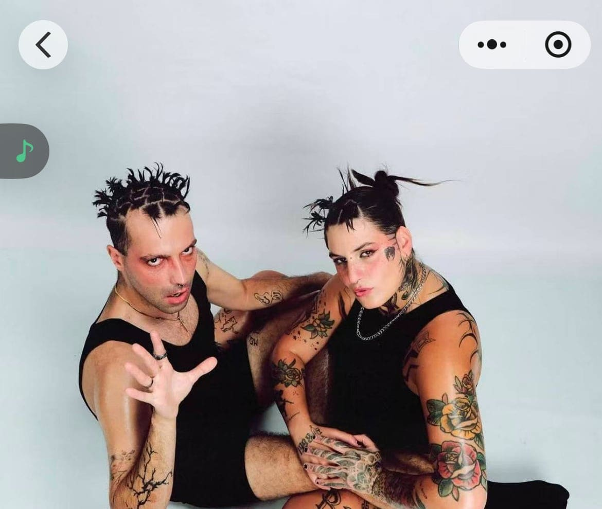

upcoming / Medium
Obsesion Total: BOTOX FATAL (live)
Abyss Jun 26 Obsesion Total with BOTOX FATAL (live), TUI, Kong BB, and Noodleprince. The new Yuyuan ticketing screenshot confirms the 22:00 start, Abyss club venue, 90 RMB+ ticket tier, e-ticket state, and no-refund label, upgrading the previous watch lead into a confirmed upcoming listing.

DateJun 26
Time22:00
VenueAbyss Shanghai
DistrictHuangpu
Soundhard techno, industrial, rave, EBM
Price90 RMB+
Age / IDCheck venue
Source layerwechat-miniprogram-ticketing
Intensityhard
Credibilitysolid
Event Tags
Simple tags for sound, room context, ticket/source status, and details that still need a source check.
How We Recommend This
- RecommendationRecommended because BOTOX FATAL is billed live, giving this Abyss date a stronger draw than a generic hard-room lineup. The industrial/rave/EBM context around the artist and the support from TUI, Kong BB, and Noodleprince make it a good pick for readers who want abrasive peak-time pressure.
- Best forBest for hard-techno and industrial-rave listeners who specifically want a live headliner in the Abyss room.
- Verify before goingOpen the Yuyuan WeChat mini-program or contact abyss_service to confirm live inventory, final ticket tier, age policy, and running order before going.
- Source confidenceUser-confirmed Yuyuan ticketing screenshot now confirms the core practical fields. The Abyss June program screenshot confirms the full lineup. Older SmartShanghai, RA Shenzhen, Bandcamp/Gomboc, and social-index sources remain supplemental context. Direct public ticket URL, exact running order, and age policy remain unavailable.
Lineup and Notes
- BOTOX FATALBOTOX FATAL plays a hard techno, industrial, rave, EBM, hard techno, industrial, rave, EBM style. Abyss June program screenshot lists BOTOX FATAL (LIVE) for Obsesion Total; Yuyuan ticketing screenshot confirms the Jun 26 Abyss ticket page.
- TUITUI: hard techno, industrial, rave, EBM, hard techno, industrial, rave, EBM selection. Abyss June program screenshot lists TUI on the Obsesion Total lineup.
- Kong BBKong BB: hard techno, industrial, rave, EBM, hard techno, industrial, rave, EBM selection. Abyss June program screenshot lists Kong BB on the Obsesion Total lineup.
- NoodleprinceNoodleprince: hard techno, industrial, rave, EBM, hard techno, industrial, rave, EBM selection. Abyss June program screenshot lists Noodleprince on the Obsesion Total lineup.
Source Trail
- SmartShanghai June 2026 clubbing guide watchlist / checked 2026-06-17 SmartShanghai lists Abyss harder-end June bookings and Botox Fatale on June 26, but the guide does not expose ticket details.
- Abyss June 2026 program screenshot official-social-screenshot / checked 2026-06-15 User-provided Abyss June program screenshot lists the relevant June Abyss events and lineups. It also contains earlier June rows that are past as of 2026-06-15 and were not added as new future listings.
- Yuyuan WeChat mini-program ticketing screenshot - Obsesion Total wechat-miniprogram-ticketing-screenshot / checked 2026-06-15 User manually confirmed this is a Yuyuan WeChat mini-program ticketing screen. It confirms 2026-06-26 22:00, Abyss club, price from 90 RMB, e-ticket, no-refund label, and customer-service route abyss_service; it does not provide a shareable public ticket URL or age policy.
- SmartShanghai Abyss venue context venue-context / checked 2026-06-15 Venue context only: supports Abyss Club identity and Huaihai/TX location context. User-provided Yuyuan ticketing screenshots and the Abyss June program screenshot remain the event-level evidence.
- BOTOX FATAL RA Shenzhen itinerary context artist-itinerary-context / checked 2026-06-14 RA confirms BOTOX FATAL in Shenzhen on June 27 with Valentina Spirito and Manu Calmet; useful China-tour context, not Shanghai event confirmation.
- BOTOX FATAL Gomboc/Bandcamp profile context artist-profile / checked 2026-06-14 Bandcamp/Gomboc tags support hard techno, industrial, rave, EBM, and techno context; not event confirmation.
- BOTOX FATAL Instagram Asia & Europe tour index preview social-index-lead / checked 2026-06-14 Public search-index preview for the artist/tour post surfaced 26.06 byyb.radio Shanghai, 26.06 ABYSS Shanghai, and 27.06 OIL Shenzhen. This supports the Shanghai tour-date lead but still requires Chrome/Instagram visual confirmation and does not confirm ticket route, door price, or set times.
- Abyss Instagram June 2026 program search preview social-index-lead / checked 2026-06-14 2026-06-14 Playwright/Chrome public-session route: Instagram home exposed no usable search input; opening the official abyss_shanghai account timed out on DOMContentLoaded but showed the account title and image placeholders only. Follow-up platform checks: XHS search for Abyss + Botox Fatale + 6.26 + Shanghai redirected to a security-limit page with error 300012 / IP at risk; screenshot saved at output/playwright/xhs-botox-security-limit.png. Instagram platform search for Abyss Botox Fatale returned HTTP 429. No visible post text, date card, support lineup, ticket route, door price, or set times were confirmed; logged-in Chrome/Instagram, user-assisted XHS, or WeChat official-account search is required.
Trust Ledger
- Last checked2026-06-15
- Selection basisIncluded for source visibility, room fit, and these editorial signals: strong techno fit, high intensity, listening/live angle.
- Commercial relationshipNo paid placement recorded.
- Correction routeSend source fixes through RED 980793145 or the corrections policy.
- PolicyHow We Recommend / Corrections